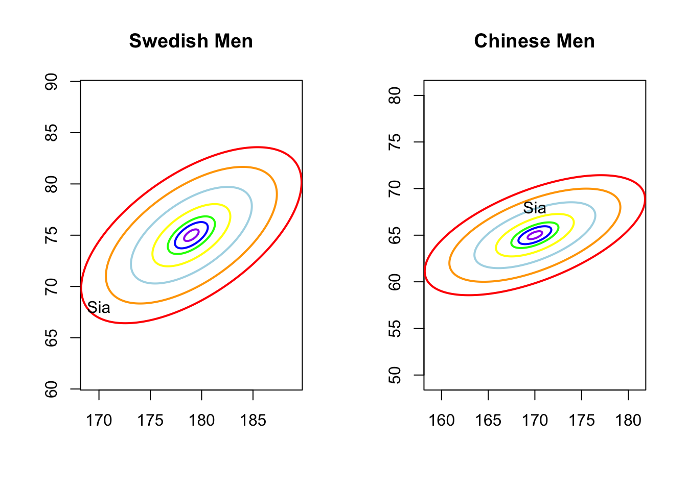
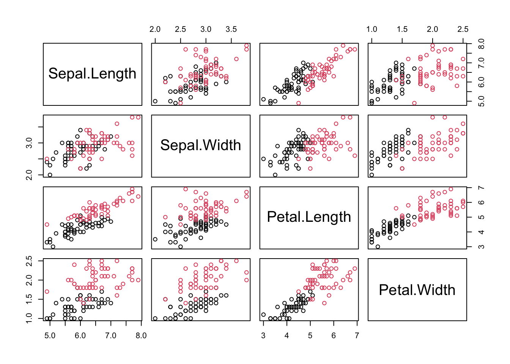
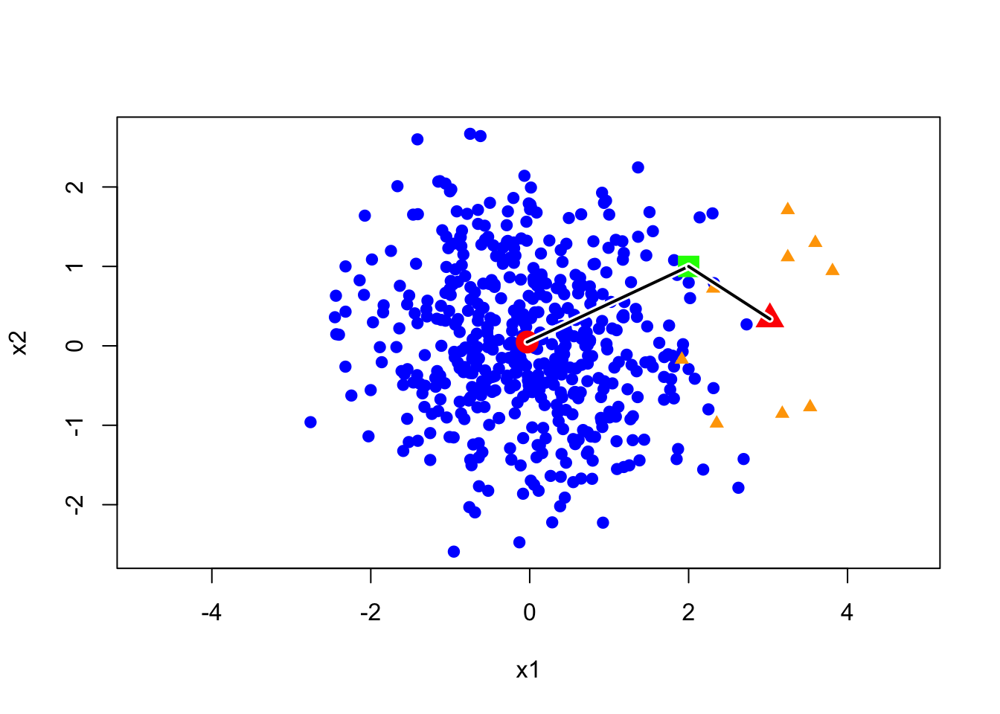
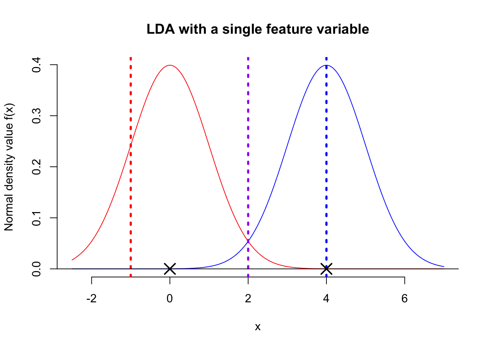
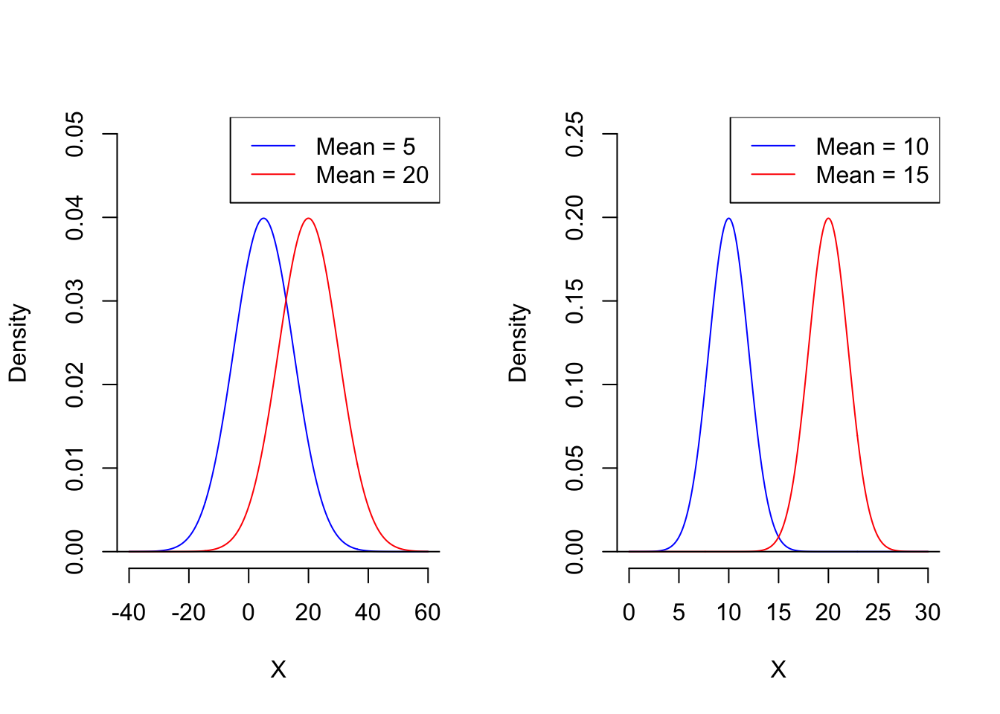

In this lecture, we will learn about the first set of machine learning models, which are also the first group of classifiers, namely Gaussian Discriminant Analysis. In addition, we will also learn how to evaluate the performance of a classifier. We will introduce several different statistics to assess a classifier from different perspectives, thereby enriching model evaluation methods beyond just accuracy.
4.1 Basic Ideas
Let me start with a motivating example. I have data on a guy’s height and weight: He is 170 cm tall and weigh 68 kg. Given that I know he is either Swedish or Chinese, which country do you think they are from? Do you have any ideas?
Let’s analyze this problem.
First, it’s clearly a classification problem—we want to make a judgment based on height and weight data.
Next, essentially, we now have an observation, so we can measure the likelihood value of this observation. However, if we want to measure the likelihood value, we first need to find an appropriate model.
This problem is simple; the bivariate normal distribution is definitely a fit, but we still need specific parameters to determine this normal model.
Returning to the problem itself: our premise is to make a judgment between Sweden and China. Clearly, we have two candidate models in front of us—the Swedish normal model and the Chinese normal model.
Now we have a plan. We can set up two candidate models and obtain their parameters from each country’s statistical department—that is, two means and a 2D covariance matrix. Then, we use these two models to evaluate the observed likelihood values for this person. If the likelihood value calculated from the Chinese model is higher than that from the Swedish model, we guess that they are Chinese; otherwise, we guess they are Swedish.
To do so, I got the statistics for both models, that is the average height and weight are \((179, 75)\), the SDs are \((5,4)\), and the correlation is \(0.6\) in Sweden; for China, the average values are \((170, 65)\), SDs are \((5.5,3)\), and correlation is also \(0.6\). Next, I plot the contour graphs of density function for both model and find the position of this guy in R
library(mvtnorm)library(ellipse)# my function for generating the contour mapcontour.g <-function(mu =c(0,0), Sigma, lwd=2, text =""){plot(0,0, xlim=c(mu[1]-2*sqrt(Sigma[1,1]),mu[1]+2*sqrt(Sigma[1,1])), ylim=c(mu[2]-1*sqrt(Sigma[2,2]),mu[2]+1*sqrt(Sigma[2,2])), asp =1,xlab ="", ylab ="", main = text) cv <-c(0.01,0.05,0.1,0.25,0.5,0.75,0.9) co <-c("purple","blue","green","yellow","light blue","orange", "red")for(i in1:7){points(ellipse(x = Sigma, centre = mu, level=cv[i], npoints=250), col=co[i], lwd=lwd, type ="l") }}# model Swedenmu1 =c(179, 75)sigma1 =matrix(c(5^2, 0.6*5*4, 0.6*5*4, 4^2), byrow = T, 2)# model Chinamu2 =c(170, 65)sigma2 =matrix(c(5.5^2, 0.6*5.5*3, 0.6*5.5*3, 3^2), byrow = T, 2)par(mfrow =c(1,2))contour.g(mu1, sigma1, text ="Swedish Men")text(x =170, y =68, "Sia" ) # find my positioncontour.g(mu2, sigma2, text ="Chinese Men")text(x =170, y =68, "Sia" ) # find my position

Oops, it was me. Obviously, under the Chinese model, I’m already a bit overweight but still within the light blue likelihood level, while under the Swedish model, I’m somewhat on the margins. So, the final judgment is that this guy is Chinese. As you know, I am originally from China, so our idea works. Great!
Disclaimer: Except for my personal data, all other data is fabricated purely for educational purposes, with no malice or discrimination intended.
4.2 Classifier constructed based on Gaussian model
Let’s summarize the basic idea of the motivating example. Essentially, we propose two candidate models based on the labels, use these two models to evaluate the object we want to predict, and then make a judgment based on the likelihood evaluation results. The candidate models here are normal distributions. Remember? A probabilistic model is essentially a probability distribution.
4.2.1 Gaussian Discriminan Analysis
Up to this point, we have actually designed a function where the input consists of the two feature variables, height and weight, and the output is the prediction of the label. A classifier constructed based on this idea is called Gaussian Discriminant Analysis (GDA). Next, let’s describe this method using precise mathematical language.
Suppose we have a target variable, \(Y\) which has \(\{-1, 1\}\) as possible values. We denote the feature variables as \(\textbf{X} = (X_1, X_2, \dots, X_p)^{\top}\). Just emphasize that \(\textbf{X}\) is not a specific observation, and it is just a random variable now. Then we assume that \[
\begin{matrix}
\textbf{x}|y=1 & \sim & \mathcal{N}(\boldsymbol{\mu}_1,\boldsymbol{\Sigma}_1)\\
\textbf{x}|y=-1 & \sim & \mathcal{N}(\boldsymbol{\mu}_2,\boldsymbol{\Sigma}_2)
\end{matrix}
\] With this model, we make the prediction by comparing the likelihood values of a new case with respect to each distribution, i.e. a new case \(\textbf{x}_{\text{new}}\) is predicted as category \(1\) if \[
f(\textbf{x}_{new}; \boldsymbol{\mu}_1,\boldsymbol{\Sigma}_1) > f(\textbf{x}_{new}; \boldsymbol{\mu}_2,\boldsymbol{\Sigma}_2)
\] where \(f\) is the density function of multivariate Gaussian distribution, otherwise, the new case will be classified to another group.
4.2.2 Linear or Nonlinear?
In Lecture 1, we explained the general form of a linear classifier, i.e., the decision boundary of the classifier is a line, a plane, or a hyperplane in higher dimensions. So far, our GDA is just an R function, kind of black box, so the question is: Is it a linear classifier? We are going to investigate it in this subsection.
First, to understand the nature of the classifier’s decision boundary, it is best to express it using mathematical language. Review the decision rule presented in the previous subsection, it is very easy to see the decision boundary can be represented as \[
\ell = \left\{ \textbf{x}: f(\textbf{x}; \boldsymbol{\mu}_1,\boldsymbol{\Sigma}_1) = f(\textbf{x}; \boldsymbol{\mu}_2,\boldsymbol{\Sigma}_2) \right\}
\] where \(f_1\) and \(f_2\) are p.d.f of normal distribution. While the notation above is in set theory language, it is not difficult to understand it. It means that, in set \(\ell\), we collect all the points \(\textbf{x}\) that satisfy the condition, \(f(\textbf{x}; \boldsymbol{\mu}_1,\boldsymbol{\Sigma}_1) = f(\textbf{x}; \boldsymbol{\mu}_2,\boldsymbol{\Sigma}_2)\), i.e. equal likelihood in a certain dimensional space.
Next, I will do some experiments in R to investigate the properties the decision boundary. Obviously, the decision boundary is determined by the two density functions together. So, my plan is to assign different parameter values to the two density functions, then, using the contour graphs of the two density functions, find the points where their values are the same, and connect them. This way, we can roughly understand the shape of the decision boundary.
Before we begin, there’s one thing we need to clarify. We only need to focus on the effect of covariance matrix, because it controls the shape of the distribution, and the shape of the distribution determines the shape of the decision boundary.
First, let’s check the simplest situation, that is the two groups all have the simplest covariance matrix, i.e. \[
\boldsymbol{\Sigma}_1 = \boldsymbol{\Sigma}_2 = \left(
\begin{matrix}
1 & 0 \\
0 & 1
\end{matrix}
\right)
\]
From the animation above, we can see that if we connect all the intersection points of contours with the same color, it will roughly form a straight line. In this very special case, our decision boundary is linear. Now, let’s relax the conditions a bit so that the Gaussian model can cover more possibilities, but not too far—just a small step.
Let’s assume that the two distributions have the same, but arbitrary, covariance matrix， i.e. \[
\boldsymbol{\Sigma}_1 = \boldsymbol{\Sigma}_2 = \left(
\begin{matrix}
1 & 0.3 \\
0.3 & 0.5
\end{matrix}
\right)
\]
Wow, it is still a linear classifier. Now, let’s further relax the conditions to the most general case, where the two distributions have completely different and arbitrary covariance matrices.
From the animation above, we can that the decision boundary is not linear anymore. Alright, we can draw a conclusion: the decision boundary in GDA is determined by the covariance matrices of the two distributions. If the two distributions share the same covariance matrix, then the classifier is linear, often referred to as Linear Discriminant Analysis (LDA). Otherwise, it is nonlinear, though not overly flexible—the decision boundary is a quadratic function, which is why it’s also known as Quadratic Discriminant Analysis (QDA).
Of course, this is just an empirical conclusion and not strictly formal. If you’re interested, you can try deriving the decision boundary using the density function of the multivariate normal distribution. You can refer to a textbook for a deeper understanding—we won’t go into detail here. (Or leave it to Sia in future. ToDo4Sia, write a separate note to explain. )
4.2.3 Training algorithm and Example in R
One relatively unique aspect is that the algorithm for training this classifier is very simple—it simply estimates the parameters of the two populations based on the data. More specifically, suppose we have a data set containing both target variable y and the data matrix of feature variables, X. We can use the target variable to find all rows from each class in X and estimate the means and covariance matrix respectively. Then we are just ready to construct the classifier with those parameters estimation.
There’s just one detail to pay attention to: in LDA, how do we estimate the shared covariance matrix? This shared covariance is called the pooled covariance matrix. You might recall that in a two-sample t-test in basic statistics, we also need to calculate the pooled variance. It’s the same principle here. To estimate the pooled covariance matrix, we can first mean-center each data set separately and then use all the mean-centered data to estimate the covariance matrix.
Let’s illustrate this with the following example in R.
R Examples
First, we import a data set for this demo. Here, we use iris data, but only consider two two species, versicolor and virginica
data = iris[51:150,]data$Species =as.factor(as.numeric(data$Species))levels(data$Species) =c("versicolor","virginica")pairs(data[,-5], col = data[,5])

Next, we want to write a R function to classify each flower based on the 4 feature variables.
Second, we can use target variable y to find out the rows of X for each species and estimate the mean and contrivance matrix.
# split data to X and YX =as.matrix(data[,-5])y = data[,5]# estimate the mean vectors and covariance matrices (mu1 =colMeans(X[1:50,]))
Now, we are ready to build the function of our classifier.
library(mvtnorm)# function for making decisionclassifier =function(x,mu1,S1,mu2,S2){# Here, we use function 'dmvnorm' in package 'mvtnorm' ell1 =dmvnorm(x,mu1,S1) ell2 =dmvnorm(x,mu2,S2) res =ifelse(ell1 > ell2, "versicolor", "virginica")return(res)}
We can apply our classifier on the 27th flower and check the accuracy of the classifier.
id =27classifier(X[id,],mu1, S1,mu2,S2)
[1] "versicolor"
y[id]
[1] versicolor
Levels: versicolor virginica
res =numeric(100)for(i in1:100){ res[i] =classifier(X[i,],mu1, S1,mu2,S2)}(acc =mean(res == y))
[1] 0.97
Looks good. Quiz: is it LDA or QDA? You need to estimate the pooled contrivance matrix if you want to go for QDA.
So far so good! We have developed the first model, or algorithm, for a binary classification problem. I hope you got a real feel for classifiers. Next, I will discuss this classifier from various perspectives.
4.3.1 More carefully
Let’s go back to the initial motivating example. In fact, we are still missing a crucial piece of information for this problem: the distribution of the target variable. For example, suppose I add a condition before you make a decision: this observation is from an athlete in the Swedish delegation at the Olympic Village. Then, you certainly wouldn’t classify this person as belonging to the Chinese group. This is an extreme example, but it truly highlights an issue: the distribution of the label variable can impact your prediction. Here, the distribution of label can be presented as \(\Pr(Y=1) = 1\) and \(\Pr(Y=-1) = 0\). Let’s modify this example to make it less extreme. Suppose I obtained this observation in Idivuoma. You can Google this place name, and you’ll find that it would be quite reasonable to say that the proportion of Swedish people here is 95%. Then, how do you make the prediction?
Let’s see a toy example. As shown in the image below, let’s assume we have two categories, and their proportions are not 50/50. It’s clear that the blue category appears significantly more often than the orange one. Now, I have a green point, and its distance to the orange center is significantly shorter than to the blue center. This means that the likelihood of the green point under the orange model is higher than under the blue model. So, the question is: which category do you think it belongs to?

500 blue points generated from the bivariate normal distribution with mean (0,0), equal variance 1, and correlation 0. 10 orange points are observations from bivariate normal with mean (3,0), and the same covariance matrix. The green point is (2,1).
In this example, the green point is closer to the orange group, however, a more reasonable label is blue since we have more chance to observe a blue point than an orange point in the neighborhood of green point. Next, we discuss how to use the prior probability to correct our prediction. First, let’s clarify our decision rule. Essentially, our previous decision-making method can be summarized by an expression.
\[
\widehat{y}=\arg \max_{y}\Pr(\textbf{x}|y)
\] In this expression, \(\arg \max_{y}\) means return the value of \(y\) such that the conditional probability (likelihood) of observation of \(\textbf{x}\), \(\Pr(\textbf{x}|y)\), is larger. To take the prior probability \(\Pr(y = 1)\) and \(\Pr(y = -1)\) into account, we can add this prior probability on the RHS of the expression, such that the majority gets more weight for the final decision. That is \[
\widehat{y}=\arg \max_{y} \Pr(\textbf{x}|y)\Pr(y)
\] If we normalize this expression by \(\Pr(\textbf{x})\), and apply Bayes formula, then we can get the final expression of our classifier, that is \[
\widehat{y} = \arg \max_{y} \Pr(y| \textbf{x})
\] So, instead of evaluating the conditional likelihood, we predict the value of target variable \(y\) as the one with larger posterior likelihood. How does this change affect the decision boundary of LDA? We still need a bit math to make it clear, but the conclusion is simple: this change only affects the bias term \(w_0\) of the decision boundary. That is the bias term will be corrected as \(w_0-\log\left(\Pr(y=-1)/\Pr(y=1)\right)\).
Remark: Actually, \(\widehat{y} = \arg \max_{y} \Pr(y| \textbf{x})\) is the general decision rule for classification. It is not only for GDA classifier, but also for other classifier, for example, we will see it again in the discussion of logistic regression.
4.3.2 Multiple labels
So far, we discussed the binary-label case, however, it can be naturally extend to a multiple-label setting. In a binary-label case, we only need to evaluate the posterior likelihood when \(y=1\) or \(-1\). In a \(k\)-label setting, we need to estimate \(k\) different Normal model and evaluate \(k\) posterior likelihood of observation \(\textbf{x}\), then predict the label as the one holding the largest posterior likelihood.
4.3.3 R functions for GDA
We have implemented this idea in subsection 4.2.3. Is there any functions that can perform LDA and QDA directly? Yes, you can apply functions lda and qda in MASS package. We use the same demo data as before.
dat = iris[51:150,]dat$Species =as.factor(as.numeric(dat$Species))levels(dat$Species) =c("versicolor","virginica")class(dat)
[1] "data.frame"
Remark: Notice that the type of data is data frame. It is very essential. Typically, functions in R packages require the input data to be of type ‘data frame’. This simplifies the function syntax and makes it easier to use the resulting model for predictions.
Next, we apply lda to train the classifier.
library(MASS)model_lda =lda(Species~., data = dat)
The usage of qda is very similar to lda, so I leave it for you to explore. Currently, we have a classifier in the form of an R function, which is very convenient to use. But what exactly does it look like? In other words, as a linear classifier, how can we write out its decision boundary according to the R outputs?
model_lda
Call:
lda(Species ~ ., data = dat)
Prior probabilities of groups:
versicolor virginica
0.5 0.5
Group means:
Sepal.Length Sepal.Width Petal.Length Petal.Width
versicolor 5.936 2.770 4.260 1.326
virginica 6.588 2.974 5.552 2.026
Coefficients of linear discriminants:
LD1
Sepal.Length -0.9431178
Sepal.Width -1.4794287
Petal.Length 1.8484510
Petal.Width 3.2847304
We’ll discuss this in the next subsection.
4.3.4 Fisher’s idea
How can we write out the decision boundary for LDA based on R outputs? Well, let’s start by discussing a simpler problem.
Question 1: Suppose we have only one feature variable—how would we classify in this case?
First, one thing is certain: we need to find a threshold value for comparison, just like in the coin sort example. So, the question is, from a classification perspective, how do we choose the optimal threshold value? Let’s take a look at the figure below.

The above figure shows the distribution of the feature variable \(X\) for two populations, both following a normal distribution with a shared variance. Now, here’s the question: among the three suggested threshold values—red, blue, and purple—which do you think is most suitable for classification? The red dashed line is definitely not suitable. Although the blue population would be correctly classified, most observations to the right of the red line would be misclassified. Similarly, the blue dashed line is slightly better but still has a 50% chance of misclassification. Given this, the purple dashed line appears to be the optimal classification boundary. The next question is, do you know how to calculate the position of the purple dashed line? From the figure, it’s clear that the purple threshold value is simply the average of the centers (means) of the two populations. Therefore, the decision boundary for a single-feature Linear Discriminant Analysis (LDA) is: \[
X = \frac{\mu_1 + \mu_2}{2}
\]
where \(\mu_1\) and \(\mu_2\) are the means of the two populations, i.e. an observation with a value of \(X\) larger than \(\frac{\mu_1 + \mu_2}{2}\) will be classified as blue.
All right, I can explain Fisher’s idea now. When we have multiple feature variables, we first assign a weight to each feature. Then, we calculate a weighted sum of all the feature variables to produce a score value. \[
\text{score} = w_1 x_1 + w_2x_2 + \dots + w_px_p
\] In this way, the problem is reduced to the same form as in Problem 1 above, where we classify based on a threshold applied to this score. In other words, we need to find the mean score for each population separately and then calculate their average. This average serves as the threshold for classification, similar to the approach with a single feature. By comparing an observation’s score to this threshold, we can classify it accordingly.
Let’s look at the outputs of lda function of the previous example again. Think about how to write down the decision boundary of LDA classifier?
model_lda
Call:
lda(Species ~ ., data = dat)
Prior probabilities of groups:
versicolor virginica
0.5 0.5
Group means:
Sepal.Length Sepal.Width Petal.Length Petal.Width
versicolor 5.936 2.770 4.260 1.326
virginica 6.588 2.974 5.552 2.026
Coefficients of linear discriminants:
LD1
Sepal.Length -0.9431178
Sepal.Width -1.4794287
Petal.Length 1.8484510
Petal.Width 3.2847304
Let me tell the quick answer. The last part of the outputs, ‘coefficients of linear discriminant’, tells us the weights for calculating the scores. Then, the mean scores of versicolor can be calculated as the weighted sum of means for versicolor in the ‘Group means’ \[
\textcolor{blue}{-0.94} \times 5.94 + (\textcolor{blue}{-1.48}) \times 2.77 + \textcolor{blue}{1.85} \times 4.26 + \textcolor{blue}{3.28} \times 1.32 = 2.53
\] Similarly, the mean scores of virginica is \[
\textcolor{blue}{-0.94} \times 6.59 + (\textcolor{blue}{-1.48}) \times 2.97 + \textcolor{blue}{1.85} \times 5.55 + \textcolor{blue}{3.28} \times 2.03 = 6.34
\]Quiz: Please write down the decision boundary of the LDA classifier.
So far, we only explained the first step of Fisher’s idea. However, how to find the optimal weights is still unclear. Let’s continue to investigate with the next question.
Question 2 (NE): What are the conditions for the optimal weights for a classification problem?
You might think the answer is simple. Referring back to the single feature variable case, based on the analysis above, the further apart the centers of the two populations are, the smaller the overlapping portion of their distributions will be, and the more likely we are to get a better threshold value. However, in reality, the distance between the centers of the two distributions alone does not fully reflect the optimal situation. See the figure below.

First, which situation do you think would lead to a better classifier? Clearly, in the case on the RHS, we can obtain a better classifier than in the case in LHS, because the two populations on the RHS have very little overlap. However, let’s take a look at their mean differences. The mean difference on the LHS is 15, which is greater than the 5 on the RHS.
Summary: We need to find a set of weights through which we can calculate the score values for the two populations. The best set of weights is the one that minimizes the distance between the centers of the score values for the two classes, while also minimizing the variance of the score values within each class. This optimal weights is called Fisher’s projection.
For now, let’s leave the algorithm for calculating the optimal weights to your future self, or ToDo4Sia. Here, you only need to know that the decision boundary obtained through Fisher’s projection is the same as the decision boundary from LDA. This is why LDA is often referred to as Fisher’s Linear Discriminant Analysis.
4.4 Model Evaluations
The evaluation of a classification model is crucial to assess its performance and ensure its effectiveness in real-world applications. Accuracy is the first metric that comes to mind when evaluating a model, but it is not sufficient. For example, in a study with 100 observations, where 95 are healthy individuals and 5 are cancer patients, a model that simply classifies every observation as healthy would achieve 95% accuracy. However, this would fail to identify the cancer patients, making the model useless for the task at hand. Next, we will explore some model evaluation methods to better understand and measure the performance of classification models.
4.4.1 Confusion Matrix and related statistics
A confusion matrix is a powerful tool used to evaluate the performance of a classification model. It shows the counts of actual versus predicted classifications, providing insights into how well the model performs across different classes.
A general confusion matrix for a binary classification problem has the following form:
Predicted Positive (P)
Predicted Negative (N)
Actual Positive (P)
True Positive (TP)
False Negative (FN)
Actual Negative (N)
False Positive (FP)
True Negative (TN)
In the matrix, the rows represent the actual class of the observations in the data set, i.e. the true labels. The first row (Actual Positive) contains all cases that actually belong to the positive class (e.g., cancer patients), while, the second row contains all cases that actually belong to the negative class (e.g., healthy individuals).
The columns represent the predicted class according to the model. The first column (Predicted Positive) contains all cases that the model predicted to be positive (e.g., predicted cancer), and the second column (Predicted Negative) contains all cases that the model predicted to be negative (e.g., predicted healthy).
With this structure, each cell in the matrix contains different meaning:
TP: The number of correct predictions where the actual class is positive and the model predicted positive.
FP: The number of incorrect predictions where the actual class is negative but the model predicted positive.
FN: The number of incorrect predictions where the actual class is positive but the model predicted negative.
TN: The number of correct predictions where the actual class is negative and the model predicted negative.
These metrics provide a comprehensive way to assess the performance of a classification model, especially when dealing with imbalanced data sets. For example, the confusion matrix of the useless classifier mentioned above is displayed below.
Predicted Cancer
Predicted Healthy
Actual Cancer
0
5
Actual Healthy
0
95
In this example, in addition to accuracy, we can further calculate other statistics to comprehensively evaluate the performance of this classifier.
Sensitivity: (True positive rate) The proportion of true positive predictions out of all actual positive cases. This statistic indicates how effectively the classifier identifies the cases of interest, showing how sensitive it is to detecting positive instances. \[
\text{Sensitivity} = \frac{\text{TP}}{\text{TP} + \text{FN}} = \frac{0}{0+5} = 0
\]
Specificity: (True negative rate) The proportion of true negative predictions out of all actual negative cases. \[
\text{Specificity} = \frac{\text{TN}}{\text{TN} + \text{FP}} = \frac{95}{0+95} = 1
\] In the lazy classifier example, although this lazy classifier has very extremely high specificity, 100%, and high accuracy, 95%, we can’t say it is good at all as the extremely low sensitivity, 0. So, people usually simultaneously use the three statistics, i.e. accuracy, sensitivity, and specificity, to evaluate the performance of a classifier.
Precision: Sometime, people are also interested in the quality of positive predictions, then the proportion of true positive predictions out of all predicted positive cases, i.e. precision, is used. \[
\text{Precision} = \frac{\text{TP}}{\text{TP} + \text{FP}}
\] In the lazy classifier example, it is an extreme cases and precision is not defined as no case is predicted as positive. Mathematically, we also arrive at the same conclusion. Since there are no positive predictions, 0 appears in the denominator, and therefore this ratio is not defined.
4.4.2 More Choices
It is often difficult and inconvenient to compare different things by considering several dimensions at once. The best approach is to find a statistic that can simultaneously evaluate a classifier from multiple perspectives.
F-score: it is a statistic that combines precision and sensitivity into a single measure to evaluate the performance of a classifier, especially in situations where both false positives and false negatives are important. Essentially, it is the harmonic mean of precision and recall, giving a balance between the two metrics.
\[
\text{F-score} = 2 \times \frac{\text{Precision} \times \text{sensitivity}}{\text{Precision} + \text{sensitivity}}
\] F-score ranges from 0 to 1, and it indicates the perfect precision and sensitivity (best performance) for a classifier when it is \(1\), but worst performance when it is \(0\) With the same example above, suppose we have a classifier always predict a person as a cancer patient, then this classifier has perfect sensitivity but very low precision which is 0.05. The F-score is \(2\times\frac{0.05 \times 1}{0.05 + 1} = 0.095\). If someone is willing to use this classifier, they must have ignored the negative effects of misclassifying a healthy person as a cancer patient.
Cohen Kappa Statistics: it is another option that can be used to comprehensively evaluate a classifier. Essentially, it is used to measure the agreement between two raters (classifiers). For example, suppose there are two classifiers both classify 100 cases. If the two classifiers agree with each other, then we can get the following matrix that is similar to the idea of confusion matrix.
Classifier 2: Positive
Classifier 2: Negative
Classifier 1: Positive
30
0
Classifier 1: Negative
0
70
Ignoring whether they are good classifiers, we can say that the two classifiers have the exactly same predictions, in another word, the two classifiers agree with each other. Let’s see another example,
Classifier 2: Positive
Classifier 2: Negative
Classifier 1: Positive
30
10
Classifier 1: Negative
5
55
In this case, apparently the two classifiers don’t have exactly the same predictions, since there are 5 cases that are predicted as negative by classifier 1 but positive by classifier 2, also 10 disagreements are in an opposite way. However, they still show a certain level of agreement. So, the question is can we design a statistic to quantify the agreement. Of course, the answer is Cohen Kappa statistic. Before showing you the formula of Kappa statistic, let’s clarify one thing. If we set ‘Classifier 1’ as the classifier you want to evaluate, and ‘Classifier 2’ as the ground truth, then this statistic will measure the agreement between your model and the ground truth, and the matrix becomes the confusion matrix.
Next, let’s have a look at the calculations of this statistic with the notations in a confusion matrix. \[
\kappa = \frac{P_o - P_e}{1 - P_e}
\]
\(P_o\) is the observed agreement: the proportion of times the two raters agree, i.e. the accuracy \[
P_o = \frac{TP + TN}{TP + TN + FP + FN}
\]
\(P_e\) is the expected agreement: the proportion of times the two raters would be expected to agree by chance \[
P_e = \left( \frac{(TP + FP)(TP + FN)}{(TP + TN + FP + FN)^2} \right) + \left( \frac{(TN + FP)(TN + FN)}{(TP + TN + FP + FN)^2} \right)
\] In general, we can use the following table as reference to evaluate a classifier. Here is the information in table format:
Kappa (κ) Value
Interpretation
κ ≥ 0.81
Almost perfect agreement
0.61 ≤ κ < 0.80
Substantial agreement
0.41 ≤ κ < 0.60
Moderate agreement
0.21 ≤ κ < 0.40
Fair agreement
κ ≤ 0.20
Slight agreement
Negative
Worse than random chance
Let’s go back to the previous example:
Classifier 2: Positive
Classifier 2: Negative
Classifier 1: Positive
30 (TP)
10 (FP)
Classifier 1: Negative
5 (FN)
55 (TN)
In this case, \(\kappa = 0.68\), and it suggests a substantial agreement between the two classifiers. If the ‘classifier 2’ represents the ground truth, then \(\kappa\) indicates that ‘classifier 1’ is a rather good classifier.